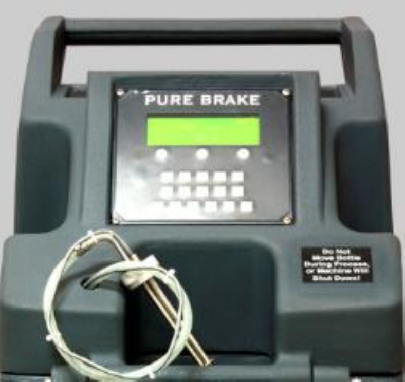

Doc no. MOC-TSB-13-25 // Vol. 13 No. 25 // Aug 27, 2013 // Brake
Pure Brake Machine Controller Board
New98150
MOC has redesigned a Controller Board for the Pure Brake Fluid Exchanger Machines, which will be included in the Pure Brake Machines as soon as possible.
What's new
For those that would like to convert the Controller Board in the older Pure Brake Machine (Part No. 98150) to the newly redesigned Controller Board, we have created a kit (Part No. 98225) that includes all the needed components for the conversion—a new board, new LCD display, ribbon cable, external fuse and face panel.
The old Controller Board (Part No. 98150) is being discontinued.
Contact
For more information, contact the Machine & Equipment Department at 866.244.6621.

Part numbers
| Part No. | Description | Notes |
|---|---|---|
| 98150 | Older Pure Brake Machine | |
| 98225 | Kit |